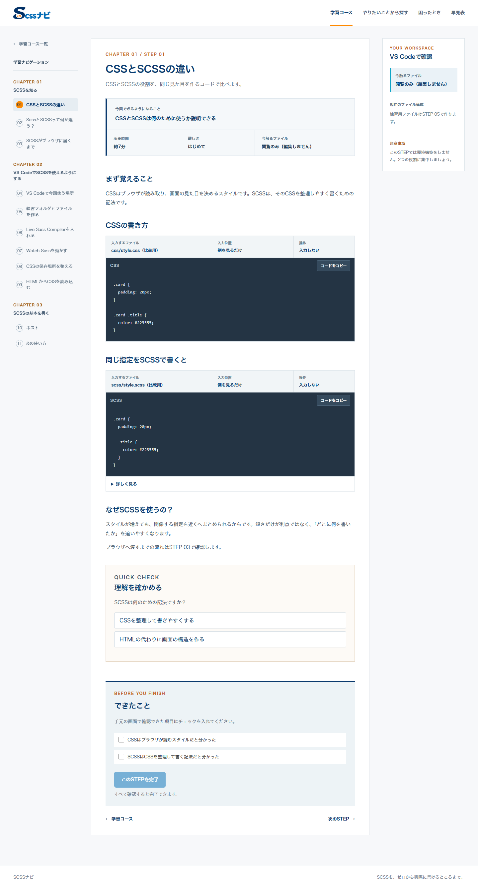
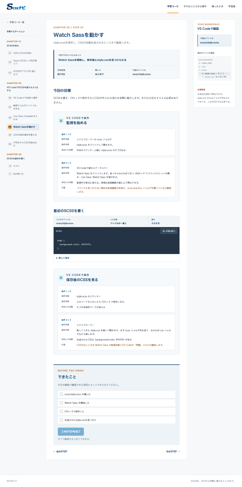
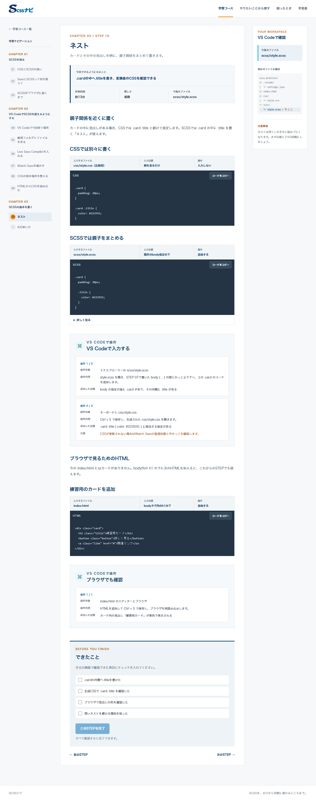
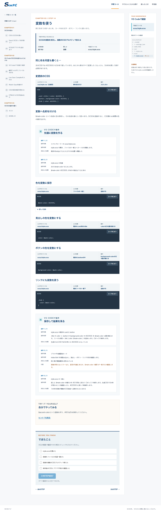

LEARNING TOOL / CONTENT DESIGN / AI DEVELOPMENT
SCSSナビ
SCSSを初めて触る人が、環境準備から小規模なWebページ制作まで段階的に学べる初心者向け学習ツールです。教材構成・学習順序・UIを整理し、AIを実装や改善の支援に活用しています。
目的と学習設計
CSSは使えるがSCSSは初めてという人が、環境準備でつまずかず学習できる教材を目指しました。VS Codeを使いながら、ターミナル操作を基本的に必須とせず、Live Sass Compilerなどで変換を確かめる構成です。
CSSとSCSSの違いから始め、環境準備、ネスト、&、変数、ファイル分割、@use、mixin、レスポンシブへと進みます。最終的に、小規模なWebページをSCSSで実装できるレベルを目指しています。
自分が担当したこと
教材の方針
対象ユーザー、学習範囲、Lesson順序、説明粒度、教材全体の方向性を決めました。
UI・学習体験
どのファイルを開き、どこへ書き、保存後に何を確認するかが追える画面構成と説明を整理しました。
AIを使ったこと
ChatGPT: 要件整理・教材構成の検討。
Codex: Webツールとしての実装・修正。
生成内容をそのまま採用せず、初心者が説明を見ながら進められるか、実画面や操作の順序を確認しています。
学習画面
実際の公開版から、環境準備、基本記法、コード確認へ進むLesson画面を掲載しています。



